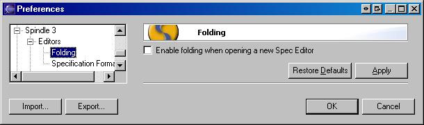
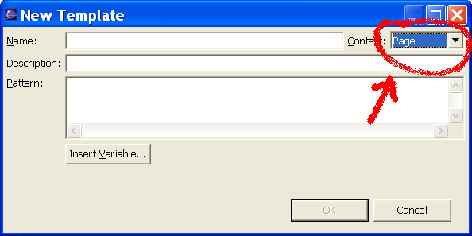

Preferences for Spindle can be set via the Eclipse preferences dialog box.
There are two options on the main tab for Spindle 3.
Developers create files in their project fully expecting that Tapestry (and Spindle) will pick them up. But, it is possible to place say, a .jwc file somewhere Tapestry would not see at runtime and thus show the ExceptionPage. Spindle will notice which files were thus "missed" and this preference gives users the option of specifying how such files should be marked.
Assets in Tapestry are localizable by appending the locale identifier to the asset name. An example would be that logo_fr.gif would be the french version of a logo. A scenario might be that a french developer includes logo_fr.gif but forgets to include logo.gif in thier project. If only localized assets are available, then Tapestry does not have a non localized version to fall back on when an unexpected locale is encountered. This case would result in the ExceptionPage being show to end users. Spindle can detect this case and this preference gives the user the option of specifying how Spindle should handle it.
The Specification editor now supports folding of XML code regions. Hovering over a folded Java element lets you peek at the hidden code:
Users can specify whether folding is turned on or off by default when a new Specification editor is opened by maniupulating the "Folding" preference:

Note: You can also control folding within each editor by right clicking in the editor gutter: 
This tab has several options to set the format for the XML documents.

You can change the templates that Spindle uses when creating applications, .html files, .page files, components and libraries.
Create the new templates on the "Templates" tab, then select which templates to use on the "Wizard Templates" page.
When creating a new template, make sure to set the context of the template (page, component, etc.)
And don't forget to click apply, before moving on to the "Wizard Templates" tab.